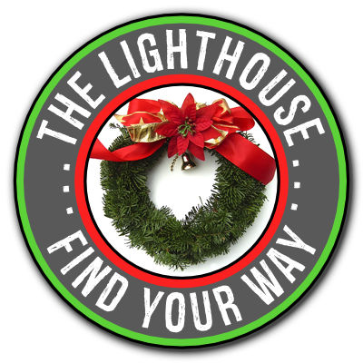

December 2018
No peace. No joy. No hope. That is what I see in so many of the faces of the kids who come to Lighthouse each week. I wish I could tell you their stories, but they are not mine to tell. A few weeks ago, one young girl who had called "shotgun" (so she could ride in the front seat) said, after a deep sigh, "I am so glad I found this place." The small part of her story that I know about is heart-breaking, and yet I am sure that there is so much more to her sigh that she cannot talk about. Whether you are dealing with your own sin or the consequences of someone else's - trying to save yourself is an exhausting battle in a war you cannot win alone. Our only hope is to believe in the story of Christmas: God loves us so deeply that he sent his son as our rescuer to provide a way that we could return to the original design and be in close personal relationship with him. When Jesus was telling his disciples that he was leaving to go back to his father, they asked him how they could go with him. His answer was not fuzzy or political - it was crystal clear. John 14:6 quotes Jesus as saying, "I am the way and the truth and the life. No one comes to the Father except through me." I am so grateful that I can say to the young people at Lighthouse, with confidence that comes from the deepest corners of my heart, that Jesus Christ is the path to peace, that the way of Jesus Christ is a journey of joy, and that by turning towards him they will receive a crazy huge heaping helping of hope, even in the midst of terrible circumstances. Friends, hope is the best gift we can give at Christmas.
Since our last newsletter in May, so much has happened that can only be described as miraculous. We had a group of men from a church about 90 miles away from us who heard about our project and decided to come do all of our framing and electrical work. Over the course of five different trips this group of guys made incredible progress. Our framing is done and our electrical work is 80% done. We are now on hold as we let our bank account replenish to prepare for the drywall phase of the project, which will be around $25,000. Our balance continues to increase monthly because of our faithful friends who believe in this mission that we are on to help young people find their way. Thank you for trusting us and continuing to help. To be honest, there were a few weeks this fall where I was overwhelmed with discouragement regarding the project. I felt guilty because so much good has happened and yet I was still deeply discouraged. People regularly ask me “how is the building project going?”, “how soon until we open?” Or, "Are you in the new building yet?" ... and having to regularly respond with "No, we're on hold right now waiting for more funding to come in" makes me feel like I am letting people down. Well meaning folks ask what specifically we are doing for fundraising - and seem surprised that we are not out doing this project or that project in order to add to the account.
The truth is, I have had no slack to give anything else. This summer was a significant season of change for our family. Our boys graduated from high school and then four weeks apart from each other they both left for Air Force basic training. In August and September we made two trips to San Antonio for their graduations, right in the midst of me coaching cross-country and going through a significant reassignment on my job. From June through October I felt like a rubber band being stretched to its limits, ready to break at any time. I remember multiple times saying to friends and our Lighthouse group, "I am very fragile right now." I finally had the breakthrough I needed while praying / crying out to the Lord one day about everything. The Lord asked me one question that day - and the answer came from deep within me. "Chris, do you trust me?" That question is one of the core struggles of man. I realized in that moment that my discouragement, my guilt, was rooted in this. I had taken my eyes off of Jesus as the one to seek and the one to trust. I ended that time of prayer feeling like a massive weight had been taken from my shoulders. I was reminded and chose to believe what Hebrews 12 says, that Jesus is our "finisher". It is wonderful to go into that unfinished building, look around and say, "Lord, I do not know how to get all of this finished. I am grateful that you do. Show me what my role is," and then to trust that he will!
Through another long time of wrestling years ago, the Lord showed me that he would use the community, those around us, to provide the resources needed. I remember saying to him (really more like begging) that I needed someone else to do fundraising, that I could not be the one to ask people to give, but he said I just need to keep telling the story of what he is doing and he would show us favor. Thank you for reading our newsletters - our story - and for responding. Please consider how you should be a part of the finishing of this project. Your gifts and encouragement enable us to continue to tell the original story of peace, joy, and hope.
From our family to yours - we hope you have a wonderful Christmas!
Gratefully,

Chris Edgington, Director
For more information about our vision for this outreach, you can read more of our newsletters at this link. You can also contact me directly at chris@LHBH.org and 765-271-6687. I would love to come share our story with your group. If you would like to send a gift, you can mail it to The Lighthouse, PO Box 336, Bunker Hill, IN 46914. You can also give electronically via the link below at the bottom of each page.